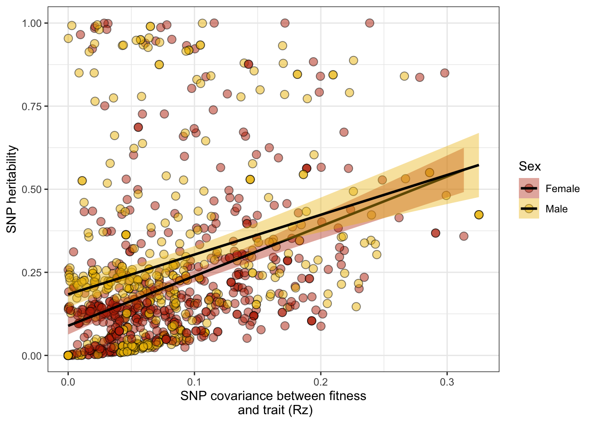

‘SNP-heritabilities’ and the Robertson-Price Identity
Last updated: 2022-05-16
Checks: 7 0
Knit directory: DGRP_sexual_conflict/
This reproducible R Markdown analysis was created with workflowr (version 1.7.0). The Checks tab describes the reproducibility checks that were applied when the results were created. The Past versions tab lists the development history.
Great! Since the R Markdown file has been committed to the Git repository, you know the exact version of the code that produced these results.
Great job! The global environment was empty. Objects defined in the global environment can affect the analysis in your R Markdown file in unknown ways. For reproduciblity it’s best to always run the code in an empty environment.
The command set.seed(20210706) was run prior to running the code in the R Markdown file. Setting a seed ensures that any results that rely on randomness, e.g. subsampling or permutations, are reproducible.
Great job! Recording the operating system, R version, and package versions is critical for reproducibility.
Nice! There were no cached chunks for this analysis, so you can be confident that you successfully produced the results during this run.
Great job! Using relative paths to the files within your workflowr project makes it easier to run your code on other machines.
Great! You are using Git for version control. Tracking code development and connecting the code version to the results is critical for reproducibility.
The results in this page were generated with repository version 30bb336. See the Past versions tab to see a history of the changes made to the R Markdown and HTML files.
Note that you need to be careful to ensure that all relevant files for the analysis have been committed to Git prior to generating the results (you can use wflow_publish or wflow_git_commit). workflowr only checks the R Markdown file, but you know if there are other scripts or data files that it depends on. Below is the status of the Git repository when the results were generated:
Ignored files:
Ignored: .DS_Store
Ignored: .Rhistory
Ignored: .Rproj.user/
Ignored: analysis/figure/
Ignored: code/.DS_Store
Ignored: gwas_data/
Untracked files:
Untracked: -Toms-laptop.Rhistory
Untracked: Manuscript/
Untracked: Reported_heritability.xlsx
Untracked: Rplot.pdf
Untracked: S_plots.pdf
Untracked: Selection_differential_plot.pdf
Untracked: Selection_differentials.pdf
Untracked: Selection_differentials_f.pdf
Untracked: Selection_differentials_m.pdf
Untracked: analysis/Random_plots.R
Untracked: code/LICENSE
Untracked: code/gcta64
Untracked: code/prettify
Untracked: code/toy.map
Untracked: code/toy.ped
Untracked: data/SNP_heritability.csv
Untracked: data/SNP_heritability_cleaned.csv
Untracked: data/SNP_selection.csv
Untracked: data/S_female.csv
Untracked: data/all_SNP_data.csv
Untracked: data/rfm_dimorphism_model.rds
Untracked: dimorphism_subset.pdf
Untracked: fitness_variation.pdf
Untracked: fits/
Untracked: lifetime_fecundity_S.pdf
Untracked: mating_latency_S.pdf
Unstaged changes:
Modified: .Rprofile
Modified: .gitattributes
Modified: .gitignore
Modified: DGRP_sexual_conflict.Rproj
Modified: README.md
Modified: _workflowr.yml
Modified: analysis/SNP_correlations.Rmd
Modified: analysis/SNP_heritabilities.Rmd
Modified: analysis/_site.yml
Modified: analysis/index.Rmd
Modified: analysis/license.Rmd
Modified: analysis/process_mashr.Rmd
Modified: analysis/run_GWAS.Rmd
Modified: analysis/run_mashr.Rmd
Modified: code/README.md
Modified: code/run_mashr.R
Modified: data/README.md
Modified: data/S_male.csv
Modified: data/all.dgrp.phenos_unscaled.csv
Modified: data/rfm.complete.csv
Modified: output/README.md
Note that any generated files, e.g. HTML, png, CSS, etc., are not included in this status report because it is ok for generated content to have uncommitted changes.
These are the previous versions of the repository in which changes were made to the R Markdown (analysis/GCTA_results.Rmd) and HTML (docs/GCTA_results.html) files. If you’ve configured a remote Git repository (see ?wflow_git_remote), click on the hyperlinks in the table below to view the files as they were in that past version.
| File | Version | Author | Date | Message |
|---|---|---|---|---|
| Rmd | 30bb336 | ausevo | 2022-05-16 | creating a more readable doc |
Load packages and results from the GCTA models
library(tidyverse)
library(glue)
library(kableExtra)
library(DT)
library(MetBrewer)
library(patchwork)
library(rcartocolor)
SNP_heritability <- read_csv("data/SNP_heritability.csv")
SNP_selection_response_estimates <- read_csv("data/SNP_selection.csv")Visualise heritability
# create an interactive table
my_data_table <- function(df){
datatable(
df, rownames=FALSE,
autoHideNavigation = TRUE,
extensions = c("Scroller", "Buttons"),
options = list(
dom = 'Bfrtip',
deferRender=TRUE,
scrollX=TRUE, scrollY=800,
scrollCollapse=TRUE,
buttons =
list('pageLength', 'colvis', 'csv', list(
extend = 'pdf',
pageSize = 'A4',
orientation = 'landscape',
filename = 'SNP_heritability')),
pageLength = 1000
)
)
}
my_data_table(SNP_heritability)p1 <-
SNP_heritability %>%
ggplot(aes(x = `V(G)/Vp`)) +
geom_histogram(fill = met.brewer("Hokusai2")[3]) +
labs(y = "Number of traits") +
theme_minimal()
p1
\(~\)
Is heritability sex-specific?
# Panel a
full_SNP_heritability_plot <-
SNP_selection_response_estimates %>%
filter(`Variance_C(G)_tr12` > -1 & `Variance_V(G)/Vp_trait` > -1 & `Variance_C(G)_tr12` < 1 & `Variance_V(G)/Vp_trait` < 1) %>%
ggplot(aes(x = Fitness_sex, y = `Variance_V(G)/Vp_trait`, fill = Fitness_sex)) +
geom_jitter(shape = 21, size = 3, alpha = 0.75) +
scale_fill_manual(values = met.brewer("VanGogh2", 2)) +
geom_boxplot(outlier.shape = NA, alpha = 0.8, fill = "white") +
labs(title = "All traits measured",
x = "Sex",
y = "SNP heritability") +
theme_bw() +
theme(legend.position = "none")
# Panel b
# Some wrangling required
data <- SNP_selection_response_estimates %>%
mutate(Trait = case_when(
str_ends(Trait, ".f") | str_ends(Trait, ".m") ~ gsub('.{2}$', '', Trait)))
a <- data %>%
filter(Fitness_sex == "Male")
b <- data %>%
filter(Fitness_sex == "Female")
# there are 264 traits for which we have measures in both sexes
SNP_both_sexes <- inner_join(a, b, by = "Trait") %>%
filter(Trait != "NA")
# Plot
subset_SNP_heritability_plot <-
SNP_both_sexes %>%
pivot_longer(cols = c(`Variance_V(G)/Vp_trait.x`, `Variance_V(G)/Vp_trait.y`), names_to = "Sex", values_to = "SNP_heritability") %>%
mutate(Sex = if_else(str_ends(Sex, ".x"), "Male", "Female")) %>%
select(-c(Fitness_sex.x, Fitness_sex.y)) %>%
filter(SNP_heritability > -1 & SNP_heritability < 1) %>%
ggplot(aes(x = Sex, y = SNP_heritability, fill = Sex)) +
geom_jitter(shape = 21, size = 3, alpha = 0.75) +
scale_fill_manual(values = met.brewer("VanGogh2", 2)) +
geom_boxplot(outlier.shape = NA, alpha = 0.8, fill = "white") +
labs(title = "Traits measured in both sexes",
x = "Sex",
y = NULL) +
theme_bw() +
theme(legend.position = "none")
full_SNP_heritability_plot + subset_SNP_heritability_plot
\(~\)
Testing general predictions of Fisher’s theorem
# create an interactive table
my_data_table <- function(df){
datatable(
df, rownames=FALSE,
autoHideNavigation = TRUE,
extensions = c("Scroller", "Buttons"),
options = list(
dom = 'Bfrtip',
deferRender=TRUE,
scrollX=TRUE, scrollY=800,
scrollCollapse=TRUE,
buttons =
list('pageLength', 'colvis', 'csv', list(
extend = 'pdf',
pageSize = 'A4',
orientation = 'landscape',
filename = 'SNP_selection')),
pageLength = 1000
)
)
}
my_data_table(SNP_selection_response_estimates %>%
select(-c(Fitness_sex, Trait_sex)) %>%
mutate_if(is.numeric, ~round(., 3))
)\(~\)
1. Do traits correlated with fitness have lower heritabilities?
Following Fisher’s theorem and assuming a constant environment, in the absence of new variation, selection is expected to erode all additive genetic variation for fitness. One implication of this expectation is that traits that are correlated with fitness should show reduced additive genetic variance relative to those that are not correlated with fitness (Robertson 1955b).
There are previous studies that have compared fitness related traits i.e. those implicated with reproduction, with morphological traits, which are assumed to have lesser relationships with fitness.
The problem is associating these traits with _lifetime) fitness. This shouldn’t be such a problem for us…
Multiple studies looking at this corollary use phenotypic correlations with fitness rather than genetic. Once again, this is no problem for us…
Even if there is lots of additive genetic variance for a trait and it is correlated with fitness, if fitness has a high environmental variance component the strength of selection on the trait will be weak.
Houle (1992) looks like an important meta-analysis type work
# some plots
a_plot <-
SNP_selection_response_estimates %>%
filter(`Variance_C(G)_tr12` > -1 & Variance_rG > -1 & `Variance_C(G)_tr12` < 1 & Variance_rG < 1) %>%
#`Trait guild` != "Metabolome" & `Trait guild` != "CHC", `Trait guild` != "Microbiome") %>%
ggplot(aes(x = `Variance_C(G)_tr12`, y = Variance_rG, fill = Fitness_sex)) +
geom_point(shape = 21, size = 3, alpha = 0.5) +
scale_fill_manual(values = met.brewer("VanGogh2", 2)) +
geom_abline(intercept = 0, slope = 1, linetype = 2) +
labs(x = "SNP covariance between fitness and trait",
y = "Genetic correlation between fitness\nand trait (Rg)",
fill = "Sex") +
theme_bw()
Rz_H_plot <-
SNP_selection_response_estimates %>%
filter(`Variance_C(G)_tr12` > -1 & `Variance_V(G)/Vp_trait` > -1 & `Variance_C(G)_tr12` < 1 & `Variance_V(G)/Vp_trait` < 1) %>%
#`Trait guild` != "Metabolome" & `Trait guild` != "CHC", `Trait guild` != "Microbiome") %>%
mutate(`Variance_C(G)_tr12` = abs(`Variance_C(G)_tr12`)) %>%
ggplot(aes(x = `Variance_C(G)_tr12`, y = `Variance_V(G)/Vp_trait`, fill = Fitness_sex)) +
#geom_hex()
geom_point(shape = 21, size = 3, alpha = 0.5) +
geom_smooth(method = "lm", colour = "black") +
scale_fill_manual(values = met.brewer("VanGogh2", 2)) +
labs(x = "SNP covariance between fitness\n and trait (Rz)",
y = "SNP heritability",
fill = "Sex") +
theme_bw()
c_plot <-
SNP_selection_response_estimates %>%
filter(Variance_rG > -1 & `Variance_V(G)/Vp_trait` > -1 & Variance_rG < 1 & `Variance_V(G)/Vp_trait` < 1) %>%
#`Trait guild` != "Metabolome" & `Trait guild` != "CHC", `Trait guild` != "Microbiome") %>%
mutate(Variance_rG = abs(Variance_rG)) %>%
ggplot(aes(x = Variance_rG, y = `Variance_V(G)/Vp_trait`, fill = Fitness_sex)) +
#geom_hex() +
geom_point(shape = 21, size = 3, alpha = 0.5) +
geom_smooth(method = "lm", colour = "black") +
scale_fill_manual(values = met.brewer("VanGogh2", 2)) +
labs(x = "Genetic correlation (Rg)\n between fitness and trait",
y = "SNP heritability") +
theme_bw() +
theme(legend.position = "none")
Rz_H_plot
Figure X: The SNP-covariance between fitness and trait (Robertson covariance) is positively correlated with SNP heritability. The Robertson covariance, or the secondary theorem of natural selection, \(R_z\) is the expected response to selection of a trait.
\(~\)
2. Do traits correlated with fitness have higher levels of both additive and residual variance
Note that heritability can also decline with an increase in environmental variance and no decrease (or an increase) in genetic variance. If true, this makes a simple regression with heritability and fitness misleading.
Using evolvability as his metric, Houle (1992) found that characters assumed to be closely related to fitness have higher evolvabilities than do trait with looser relationships to fitness. This suggests that the negative relationship between fitness and heritability is due to increased environmental variance in fitness related traits, not a decrease in additive genetic variance.
\(~\)
Sexually antagonstic selection
\(~\)
Using the Robertson covariance We have found th expected responses to selection for many traits in females and males. For those traits where we have a measure of both, we can quantify sexually antagonistic selection by finding traits that have selection operating in opposite directions, depending on which sex the trait is expressed in.
Innocenti and Morrow (2011) present an index for measuring the intensity for sexually antagonistic selection:
\(I = \frac{\beta_M \beta_F}{\sqrt{(\beta_M^{2} + \beta_F^{2})/2}}\)
Where \(B_F\) and \(B_M\) are the standardised selection gradients for females and males respectively.
From Innocenti and Morrow:
This index is positive when selection is concordant in the two sexes, negative when antagonistic in the two sexes, and is zero when selection is absent in one sex (note that it will miss conflict that occurs when strong stabilizing selection is present in that sex). Finally it is proportional to the absolute intensity of selection.
Additionally, it has the desirable properties of being symmetrical and normally distributed for a random set of normally distributed \(B_F\), \(B_M\). |I| is also always included in the interval between the absolute values of the selection gradient in the two sexes, and it coincides with them when \(B_F\) = \(B_M\). As a potential drawback, it should be noted that such quantity is not defined when \(B_F\) = \(B_M\) = 0, even though it makes little sense to estimate how concordant or antagonistic directional selection is when it is absent in both sexes.
\(~\)
# create our sexual antagonism tibble by joining the female and male tibbles by traits they both share
SNP_antagonism <- SNP_both_sexes %>%
rename(Trait_covariance_male_fitness = `Variance_C(G)_tr12.x`,
Trait_covariance_female_fitness = `Variance_C(G)_tr12.y`) %>%
select(-c(Fitness_sex.x, Fitness_sex.y)) %>%
# calculate the innocenti and morrow index
mutate(Selection_index = Trait_covariance_female_fitness * Trait_covariance_male_fitness / sqrt(((Trait_covariance_female_fitness)^2 + (Trait_covariance_male_fitness)^2)/2)) %>%
# get rid of traits with unrealistic covariances
filter(Trait_covariance_male_fitness > -5,
Trait_covariance_female_fitness < 2 & Trait_covariance_female_fitness > -5)
# plot the data
sexual_concordance_plot <-
ggplot(data = SNP_antagonism, aes(x = Trait_covariance_female_fitness, y = Trait_covariance_male_fitness, fill = Selection_index)) +
#geom_hex(bins = 20) +
geom_point(shape = 21, alpha = 0.85, size = 4, show.legend = TRUE) + #width = 0.003, height = 0.003) +
#geom_point(shape = 21, alpha = 0.9, size = 5, show.legend = FALSE) +
geom_smooth(method = 'lm', color='black') +
geom_hline(yintercept = 0, linetype = 2) +
geom_vline(xintercept = 0, linetype = 2) +
#coord_cartesian(xlim = c(-0.35, 0.35), ylim = c(-0.4, 0.4)) +
scale_fill_carto_c(palette = "Geyser",
breaks=c(-0.25, -0.125, 0, 0.125, 0.25),
limits=c(-0.25,0.25)) +
labs(x = "Female response to selection",
y = "Male response to selection",
fill = "Concordance\n of selection\n") +
theme_bw() +
theme(panel.border= element_blank(),
axis.line=element_line(),
text = element_text(size=14),
panel.grid.major.x = element_blank(),
panel.grid.major.y = element_blank(),
panel.grid.minor.y = element_blank(),
panel.grid.minor.x = element_blank(),
axis.title.x = element_text(size = 14),
axis.title.y = element_text(size = 14))
sexual_concordance_plot
Figure X:
sessionInfo()R version 4.1.0 (2021-05-18)
Platform: x86_64-apple-darwin17.0 (64-bit)
Running under: macOS Big Sur 10.16
Matrix products: default
BLAS: /Library/Frameworks/R.framework/Versions/4.1/Resources/lib/libRblas.dylib
LAPACK: /Library/Frameworks/R.framework/Versions/4.1/Resources/lib/libRlapack.dylib
locale:
[1] en_AU.UTF-8/en_AU.UTF-8/en_AU.UTF-8/C/en_AU.UTF-8/en_AU.UTF-8
attached base packages:
[1] stats graphics grDevices utils datasets methods base
other attached packages:
[1] rcartocolor_2.0.0 patchwork_1.1.1 MetBrewer_0.2.0 DT_0.22
[5] kableExtra_1.3.4 glue_1.6.2 forcats_0.5.1 stringr_1.4.0
[9] dplyr_1.0.8 purrr_0.3.4 readr_2.1.2 tidyr_1.2.0
[13] tibble_3.1.6 ggplot2_3.3.5 tidyverse_1.3.1 workflowr_1.7.0
loaded via a namespace (and not attached):
[1] nlme_3.1-157 fs_1.5.2 lubridate_1.8.0 bit64_4.0.5
[5] webshot_0.5.3 httr_1.4.2 rprojroot_2.0.3 tools_4.1.0
[9] backports_1.4.1 bslib_0.3.1 utf8_1.2.2 R6_2.5.1
[13] mgcv_1.8-40 DBI_1.1.2 colorspace_2.0-3 withr_2.5.0
[17] tidyselect_1.1.2 processx_3.5.3 bit_4.0.4 compiler_4.1.0
[21] git2r_0.30.1 cli_3.2.0 rvest_1.0.2 xml2_1.3.3
[25] labeling_0.4.2 sass_0.4.1 scales_1.2.0 callr_3.7.0
[29] systemfonts_1.0.4 digest_0.6.29 rmarkdown_2.13 svglite_2.1.0
[33] pkgconfig_2.0.3 htmltools_0.5.2 dbplyr_2.1.1 fastmap_1.1.0
[37] highr_0.9 htmlwidgets_1.5.4 rlang_1.0.2 readxl_1.4.0
[41] rstudioapi_0.13 jquerylib_0.1.4 generics_0.1.2 farver_2.1.0
[45] jsonlite_1.8.0 crosstalk_1.2.0 vroom_1.5.7 magrittr_2.0.3
[49] Matrix_1.4-1 Rcpp_1.0.8.3 munsell_0.5.0 fansi_1.0.3
[53] lifecycle_1.0.1 stringi_1.7.6 whisker_0.4 yaml_2.3.5
[57] grid_4.1.0 parallel_4.1.0 promises_1.2.0.1 crayon_1.5.1
[61] lattice_0.20-45 splines_4.1.0 haven_2.5.0 hms_1.1.1
[65] knitr_1.38 ps_1.7.0 pillar_1.7.0 reprex_2.0.1
[69] evaluate_0.15 getPass_0.2-2 modelr_0.1.8 vctrs_0.4.1
[73] tzdb_0.3.0 httpuv_1.6.5 cellranger_1.1.0 gtable_0.3.0
[77] assertthat_0.2.1 xfun_0.30 broom_0.8.0 later_1.3.0
[81] viridisLite_0.4.0 ellipsis_0.3.2